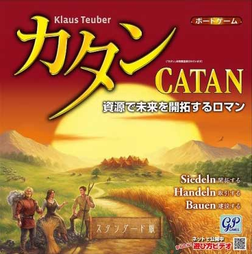
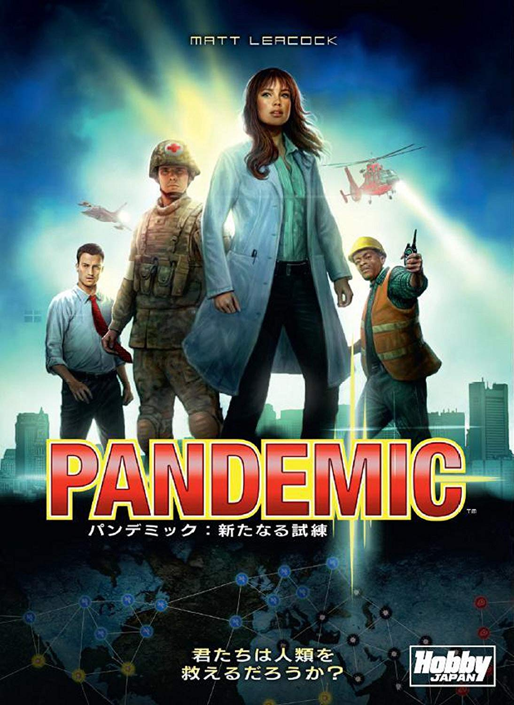
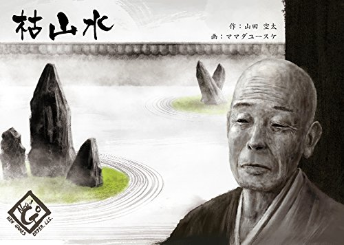

1stWAR 最もポピュラーなボードゲーム
カタンの開拓者たち

舞台は大航海時代、未開の島「カタン」で陣取り合戦
探検者によって偶然発見された無人島「カタン」。資源が豊富なこの島を舞台に開拓競争がスタート。
最初に拠点なる家(開拓地)を建ててそこから島全体に陣地を拡大。もっとも早く島を開拓した人がカタンの支配者となる。
2ndWAR 感染症から世界を救え！
パンデミック : 新たなる試練

君たちは、人類を救えるだろうか？
プレイヤーたちは「医者」や「科学者」となって、世界の各都市を飛び回りながら、世界の各都市を飛び回りながら、世界中で発生する危険な感染症の拡大を防いでいく、多人数協力型のボードゲーム。
油断すれば爆発的に広がっていく4種類の病原菌すべてのワクチンを発見できればプレイヤーチームの勝利だ。
3rdWAR 禅の精神と芸術性を磨く
枯山水

美しい日本庭園が造り出す「侘び寂び」の世界へ
枯山水とは、水を使わずに自然山水の美を凝縮し表現した、日本庭園の一様式です。この発想は禅の精神に通じ、主に室町時代後期に発展を遂げ、江戸時代から今日に至るまで、優れた枯山水庭園が造られてきました。
このゲームではプレイヤーは禅僧となり、美しく洗練された枯山水庭園を造ることを目指します。
参加者募集！
ボードゲームはひとりじゃあ遊べない。一緒にやる仲間も、なかなかどうして、見つからないもんだ。
きみもそうだろ？
なら、一緒にやろうじゃないか。
柚希ジムはきみの参戦を待っている。
good luck.
参加する
※TwiPlaに飛びます